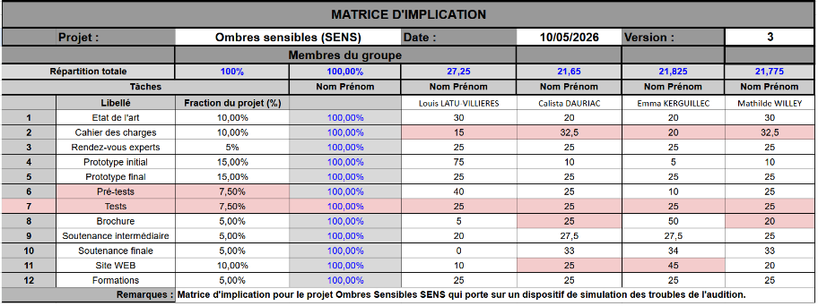

Audiosensible
Rendre perceptible ce qui ne l'est pas
Simulation d'hypoacousie, jeu de rôle immersif et site de sensibilisation — une année de projet pour faire ressentir des troubles que l'on ne voit pas.
Sommaire
Au programme de cette soutenance
L'équipe derrière le projet
Qui sommes-nous ?


01 · Contexte
Une mission, une liberté — et un sujet qui nous touche.
Dans le cadre de la semaine SASU, nous avions pour mission de sensibiliser les élèves de 2e année de l'ENSC à un handicap invisible — le choix du sujet et de la forme nous était laissé libre.
Matrice d'implication
Répartition des tâches

Planning
Calendrier du projet
02 · Les troubles étudiés
Quatre réalités auditives, un même isolement
Hyperacousie
Tout trop fort
La souffrance face à des sons ordinaires — un froissement de papier, les voix en couloir, le bruit d'un restaurant. Perçus comme douloureux, intolérables, épuisants. Non simulable sans risque éthique — travaillée via le site.
Hypoacousie
Le monde en sourdine
Une perte auditive partielle, souvent progressive. Les consonnes s'estompent, les conversations deviennent épuisantes à suivre, la fatigue cognitive s'installe. Cible principale de notre simulateur.
Acouphènes
Des sons sans source
Un sifflement, un bourdonnement — constants, intérieurs, inaudibles des autres. Ils colonisent le silence, perturbent le sommeil, génèrent une anxiété chronique. Un bruit fantôme que rien ne peut éteindre.
Troubles vestibulaires
L'équilibre fragile
Des vertiges soudains, des sensations de rotation, une instabilité permanente liée à l'oreille interne. Les crises surviennent de façon imprévisible, rendant toute activité du quotidien dangereuse.
02 · Focus — hypoacousie
Un handicap sous-estimé aux conséquences profondes
03 · Cahier des charges
Objectifs & contraintes
- O1Provoquer de l'empathie par une expérience immersive — pas seulement informer.
- O2Toucher tous les profils — qu'ils soient déjà sensibilisés ou totalement naïfs sur le sujet.
- O3Ne causer aucun préjudice — limitation automatique du volume sonore (< 85 dB).
- O4Laisser une trace — une brochure et le site web comme ressources consultables au-delà de la semaine SASU.
04 · Le simulateur — approche technique
Reproduire une perte auditive de façon réaliste et sûre
L'hypoacousie n'est pas une simple baisse de volume : elle affecte sélectivement les hautes fréquences, rendant les consonnes et la parole inintelligibles.
- 1Capture du son ambiant via microphone omnidirectionnel
- 2Traitement numérique par filtres BiQuad biquadratiques
- 3Atténuation sélective des hautes fréquences (consonnes)
- 4Restitution stéréo dans les écouteurs filaires — latence < 40 ms
04 · Protocole
Déroulé de la session de sensibilisation
L'expérience vécue — scénario d'usage
04 · Le site — une ressource durable
Au-delà de la semaine SASU
Le site Audiosensible prolonge l'impact de la sensibilisation au-delà de l'événement. Il est conçu pour être consulté, partagé et utilisé — et dispose de toutes les ressources pour que le projet puisse être repris et amélioré.
- →4 pages dédiées : hypoacousie, hyperacousie, acouphènes, vertiges
- →Simulateur d'hypoacousie accessible en ligne
- →Témoignages patients, ressources et associations de référence
- →Code source et protocole open source, disponibles pour d'autres équipes
04 · Ce que nous avons dû surmonter
Les défis inattendus du projet
05 · Résultats — données quantitatives
Ce que les chiffres nous ont appris
05 · Ce que les participants ont vécu
L'expérience qui change les regards
05 · Discussion
Ce que le projet ne peut pas (encore) faire
- !La simulation reste partielle — une hypoacousie réelle implique distorsion, recrutement et fatigue que nous ne reproduisons pas.
- !L'empathie induite est temporaire sans ancrage — la brochure, le site et le débriefing sont essentiels pour consolider.
- !L'hyperacousie n'a pas pu être simulée pour des raisons éthiques — sa dimension douloureuse est mal restituée par le texte seul.
- !La taille d'échantillon reste limitée à la cohorte SASU — pas de généralisation possible.
Ce que ça nous apprend
Le gap entre savoir et ressentir
Les participants connaissaient, pour la plupart, l'existence de l'hypoacousie. Ce qu'ils n'avaient jamais expérimenté, c'est la charge cognitive associée, la gêne sociale, et l'épuisement d'une conversation ordinaire. C'est ce gap que notre dispositif comble — imparfaitement, mais réellement.
06 · Et après ?
Ce que ce projet pourrait devenir
Merci pour votre attention
Découvrez le site en direct
Rendez-vous sur le site Audiosensible pour explorer les 4 troubles en détail et tester le simulateur d'hypoacousie en ligne.
 audiosensible.netlify.app
audiosensible.netlify.app
Pour aller plus loin
Des questions ?
Nous sommes disponibles pour détailler nos choix techniques, méthodologiques, ou partager nos learnings sur un an de projet.